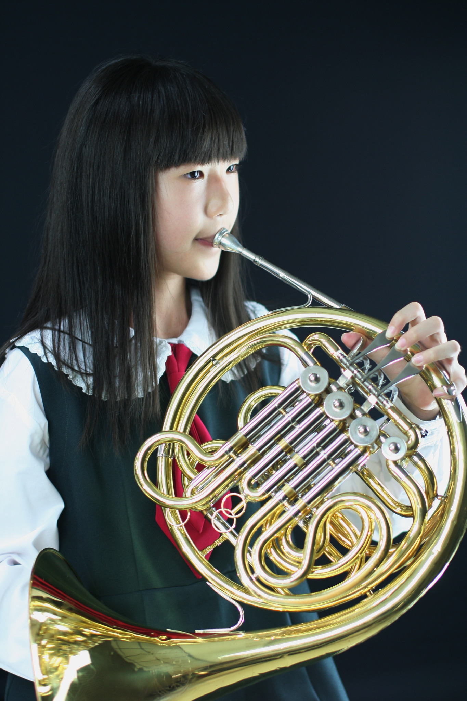

管不住的享樂

Orchestra
學校剛開始招生的時候我並沒有想要參加，直到過了半學期之後才突然不知道是哪個瞬間產生了想要學音樂的想法，不過那時候其他人都已經學了一段時間的樂理了，我還在從頭練習看譜，還要數很久的格子才知道音高，雖然很怕落後但竟然不會覺得煩，甚至後來開始學樂器後我反而樂理比其他同學都還要好。在我經歷過的這幾屆中，我們的管樂團其實經歷了不少風波，但也一起完成了好多表演和比賽、各種好聽的曲子，也和別的學校交流，還順便副修打擊的鐵琴跟木琴(想當初我還超不願意)，從小就有機會學又特別又好貴的樂器，現在想起來，確實帶給我獨一無二的音樂童年。

French Horn
最近也會想到，好久沒有回去見法國號老師了，那時候她說最喜歡上我們這屆的分部課(可能是我跟另外兩個同學都很吵而且是反應富人，但是我們也都很認真啦)，所以跟老師的感情很好，還會經常準備有的沒的活動慶祝節日，之前要畢業的時候真的很捨不得。想想我真的離開法國號好多年了，好想念。
(這張照片我當時真的很滿意，還好跟現在長得差不多。)
Phone
(02) 22368228Address
臺北市文山區木柵路一段17巷1號臺灣
www.shu.edu.tw